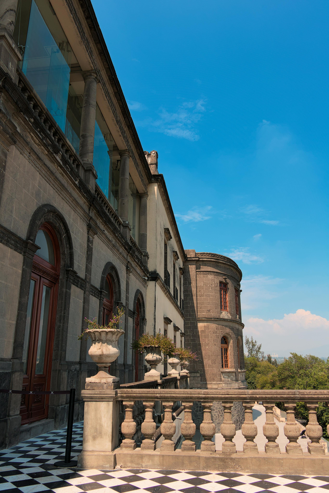
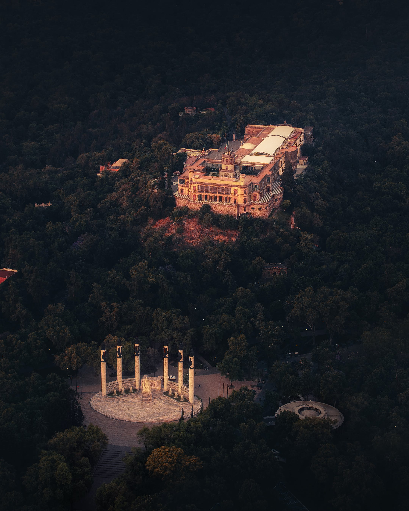
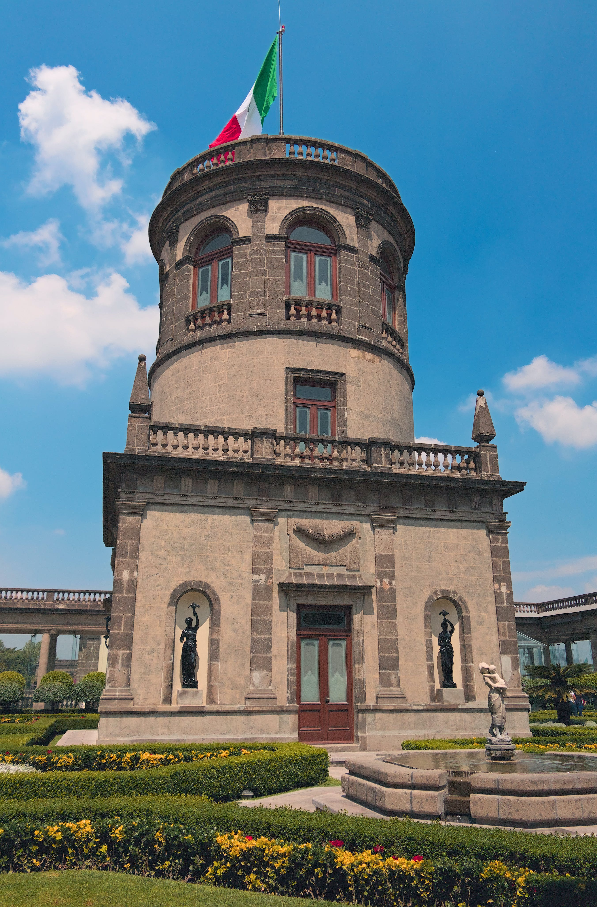

Descubre

Conoce

Explora

Sumérgete
¡Bienvenido a Chapultepec, el pulmón verde de la Ciudad de México!. Un paraíso para los amantes de la naturaleza, la cultura y la historia. ¡Un lugar para todos!. En sus 686 hectáreas encontrarás un sinfín de actividades para disfrutar, desde caminar por los senderos del bosque hasta visitar museos y monumentos. Descubre la riqueza histórica en el Castillo de Chapultepec, un majestuoso palacio que te transportará en el tiempo. Con sus museos, como el Museo Nacional de Antropología, explorarás las fascinantes culturas que han dejado su huella en México. Si buscas actividad al aire libre, los lagos y bosques te ofrecen un escape perfecto. Pasea en bote en el Lago de Chapultepec o disfruta de un picnic en sus áreas verdes. ¿Amante de la adrenalina? Explora el Zoológico de Chapultepec o aventúrate en la pista de jogging Chapultepec es el lugar donde la naturaleza, la historia y la diversión convergen. ¡Descúbrelo y vive la magia de Chapultepec hoy mismo!
Fotografías
Verano
Naturaleza
Actividades físicas
Cultura